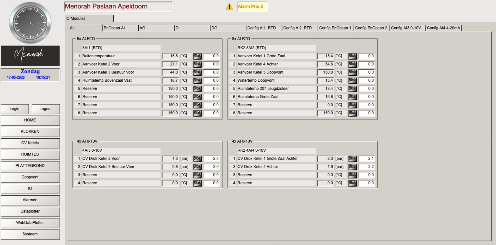
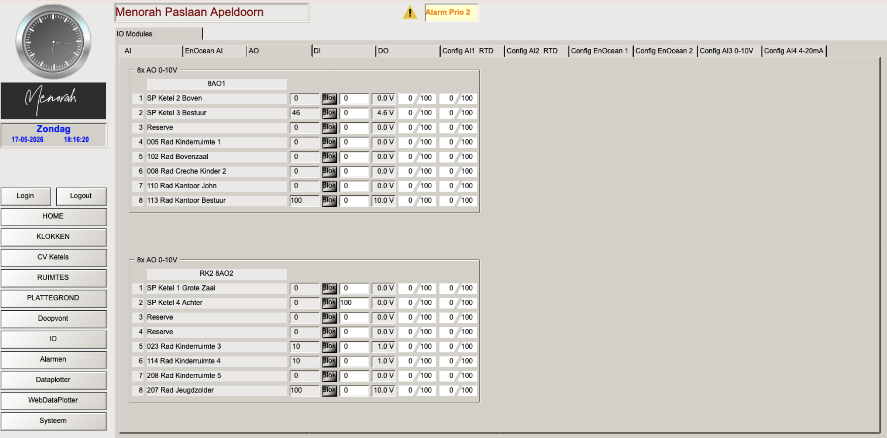
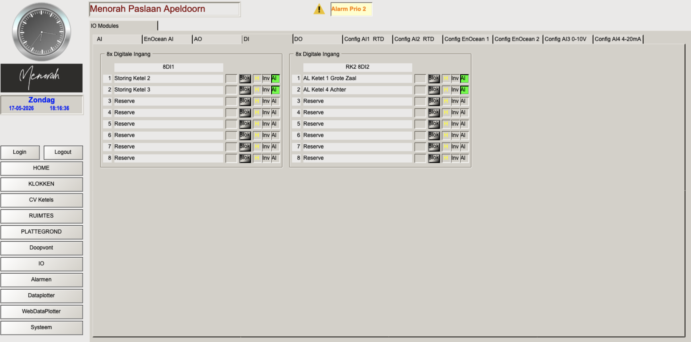

Het I/O scherm geeft een volledig overzicht van alle aangesloten sensoren en actuatoren. Dit is de hardwaremapping van de installatie — essentieel bij storingen, sensorvervanging en code-analyse.
Elke ingang heeft een Blok knop. Hiermee blokkeer je een falende sensor en vervang je de meting tijdelijk door een vaste waarde. Dit is een noodoplossing — vergeet niet de blokkering op te heffen na reparatie.
Analoge Ingangen (AI) — RTD temperatuursensoren

📷 screenshots/io_ai.png — nog toe te voegenWaarde 150°C = sensor niet aangesloten (open kring). Waarde 0°C = ongebruikt kanaal.
EnOcean draadloze sensoren (AI)

* = default waarde bij verbindingsverlies. Werkelijke temperatuur onbekend.
EnOcean sensor ID nummers
Bij vervanging van een sensor moet het nieuwe hardware ID worden geconfigureerd. De huidige ID nummers zijn zichtbaar in het IO scherm onder de sensor tabel. Noteer het ID van de nieuwe sensor na vervanging en geef dit door aan Van Niel voor configuratie.
Analoge Uitgangen (AO) — Radiatorkleppen en ketelsignalen

📷 screenshots/io_ao.png — nog toe te voegen* = default klepstand 10% bij sensoruitval. SP = setpoint signaal naar ketel (mengklepbesturing).
Digitale Ingangen (DI) & Uitgangen (DO)

📷 screenshots/io_di.png — nog toe te voegen| Module | Kanaal | Naam | Status normaal |
|---|---|---|---|
| 8DI1 | 1 | Storing Ketel 2 | Groen = geen storing |
| 2 | Storing Ketel 3 | Groen = geen storing | |
| RK2 8DI2 | 1 | AL Ketel 1 Grote Zaal | Groen = geen alarm |
| 2 | AL Ketel 4 Achter | Groen = geen alarm |
De digitale uitgang (DO) heeft slechts één actief kanaal: Inschak Ketel 5 Doopvont — het aan/uit signaal voor de doopvontketel.